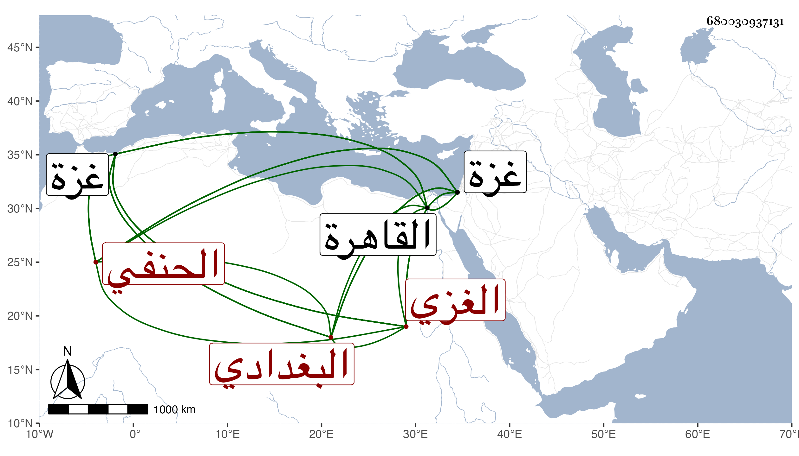

0902Sakhawi.DawLamic.ITO20230111-ara1.EIS1600.680030937131
Biography ID: 680030937131
639
علي بن أحمد بن محمد العلاء البغدادي الأصل الغزي الحنفي نزيل القاهرة وإمام إينال ويعرف بالغزي . ولد سنة عشر وثمانمائة بغزة ونشأ بها فحفظ القرآن والكنز والمنظومة للنسفي وقرأ في الفقه على ناصر الدين الإياسي مدرس غزة ومفتيها وصحب في صغره البرهان بن زقاعة وتدرب به ويقال أنه كان يدري القراءات واتصل بخدمة الأشرف إينال لما ولي نيابة غزة وعلم أولاده القرآن ثم ترقى حتى أم به وعظم اختصاصه به وبجماعته ووثقوا بأمانته وديانته فلما تسلطن صار من أئمته وولاه نظر الأوقاف وعظم أمره وجمع أموالا جمة كان ينفدها إما في عمارة أو في هبة فإنه كان غاية في الكرم بل يرتقي إلى التبذير مع تحر في الطهارة ووسواس زائد وتدين وعفة وطيش وخفة وقد سمعت منه ما نقمته جدا عليه مما شافهته بإنكاره سرا وكذا حكى عنه غيري شيئا من نمطه . مات في يوم الاثنين ثالث عشر جمادى الثانية سنة سبع وستين رحمه الله وعفا عنه .
